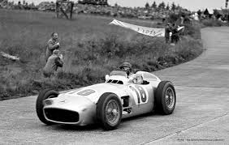
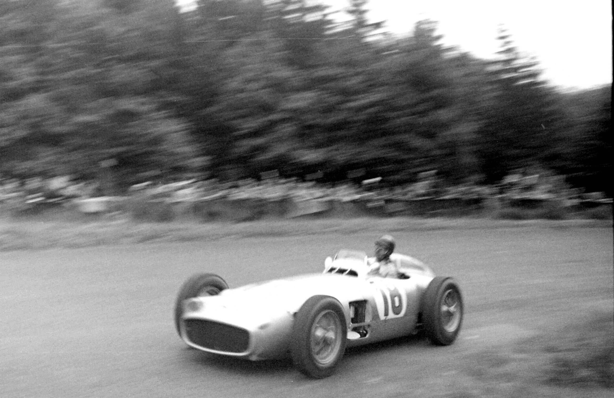
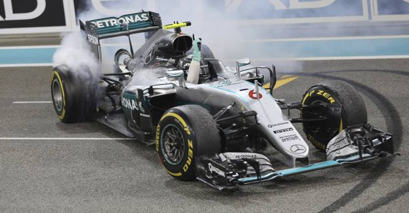
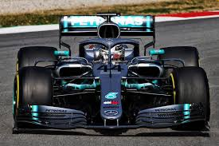

La Mercedes AMG F1 è una scuderia tedesca di Formula 1 con sede a Brackley, nel Regno Unito, sezione sportiva della casa automobilistica Mercedes. Dal 2023 viene iscritta al campionato mondiale di Formula 1 con il nome di Mercedes-AMG PETRONAS F1 Team, in base all'accordo di sponsorizzazione con l'azienda malese Petronas iniziato nel 2010. La Mercedes partecipò vittoriosamente al campionato mondiale di Formula 1 nel biennio 1954-1955 ottenendo due titoli mondiali piloti prima di ritirarsi.  Pur avendo una lunga storia come costruttore nelle competizioni automobilistiche, la prima partecipazione della Mercedes al campionato mondiale di Formula 1 fu limitata alle stagioni 1954 e 1955, dove ottenne risultati eccellenti. Juan Manuel Fangio, due volte campione del mondo con Mercedes, al volante della W 196 R nel Gran Premio di Germania 1954. Nel Gran Premio d'esordio, in Francia, quarta gara della stagione, l'argentino conquista pole e vittoria, Kling giunge secondo sia in prova che in gara, mentre Herrmann conquista il gpv. Fangio nella stagione conquista altre tre affermazioni , tre pole e due gpv, a cui si aggiunge un gpv di Kling. Fangio vince il mondiale piloti per la seconda volta e la Mercedes conquista ben 7 podi. Al termine della stagione, in seguito al disastro di Le Mans, la casa di Stoccarda decide per il ritiro dalla F1 con uno score di nove vittorie su 12 gare, 8 pole, 9 giri più veloci, 17 podi, 5 doppiette. Nelle gare fuori campionato la Mercedes conquista il Gran Premio di Berlino 1954 con Kling, il Gran Premio Città di Buenos Aires 1955 con Fangio, tra l'altro le uniche a cui partecipa. 
Dal 1993 la Mercedes rientra nella F1 come sponsor della scuderia elvetica Sauber, grazie alla collaborazione con la compagnia specializzata britannica Ilmor Engineering, acquisita dalla casa di Stoccarda nello stesso anno. Nel 1995 la Mercedes inizia la partnership con la McLaren, terminata nel 2009, quando la Mercedes-Benz annuncerà l'acquisizione della maggioranza della scuderia Brawn GP, che diventa Mercedes GP a partire dal 2010. Contestualmente, la Mercedes cederà gradualmente la propria quota alla McLaren e continuerà a fornire i motori gratuitamente fino al 2014. La prima vittoria viene ottenuta con David Coulthard nel Gran Premio d'Australia 1997, prima gara di quella stagione, seguita da altri 2 successi sempre di Coulthard nel Gran Premio d'Italia e di Mika Häkkinen nel Gran Premio d'Europa.
Toto Wolff e Niki Lauda , rispettivamente team principal e presidente della Mercedes egemone della Formula 1 nella seconda metà degli anni 2010. Nella stagione 2014 la Mercedes si presentò come scuderia di riferimento. In Australia Rosberg vince con Hamilton ritirato nei primi giri. Dalla Malesia in poi Hamilton infila 4 vittorie consecutive, sempre davanti al compagno di scuderia, guadagnando la testa nel mondiale.  A Monaco vince Rosberg con Hamilton secondo, mentre in Canada Rosberg giunge secondo e Hamilton è costretto al ritiro. Rosberg vince in Austria seguito da Hamilton, mentre in Gran Bretagna Hamilton vince mentre Rosberg per problemi al cambio è costretto al ritiro, rifacendosi in Germania con pole e vittoria, mentre Hamilton giunge terzo per problemi in qualifica. In Italia il pilota inglese vince davanti al compagno, e a Singapore, complice il ritiro di Rosberg, si porta in testa al mondiale, allungando ulteriormente con tre vittorie in Giappone, Russia e Stati Uniti. Hamilton vince il mondiale con 384 punti, contro i 317 del tedesco. La squadra Mercedes festeggia la doppietta conseguita al Gran Premio del Giappone 2015. La Mercedes si confermò la squadra da battere per il 2015. La stagione parte con Hamilton e Rosberg in prima e seconda posizione nel Gran Premio d'Australia. In Malesia Hamilton è secondo davanti a Rosberg, con il ferrarista Vettel primo. Tuttavia in Cina Hamilton vinse davanti a Rosberg, bissando poi in Bahrein davanti al ferrarista Kimi Räikkönen e a Rosberg. In Spagna arriva il primo successo stagionale per Rosberg, bissato nel discusso Gran Premio di Monaco. Hamilton torna in cattedra a Montreal, mentre in Austria vince Rosberg davanti al britannico, che si riscatta in Gran Bretagna vincendo davanti al compagno. In Ungheria Hamilton è solo sesto, con Rosberg addirittura ottavo. Hamilton vince in Belgio e in Italia, dove Rosberg è rispettivamente secondo e ritirato. A Singapore Rosberg è quarto lontano dal podio e Hamilton è costretto al ritiro. In Russia Hamilton vince, con Rosberg ritirato. Tuttavia questo basta alla Mercedes per vincere il secondo titolo costruttori della sua storia. Nella successiva gara del 25 ottobre negli Stati Uniti, Lewis Hamilton taglia il traguardo precedendo il compagno di squadra laureandosi così, per la seconda volta consecutiva, campione del mondo. In Messico, Brasile e ad Abu Dhabi Rosberg trionfa davanti al compagno di squadra, permettendo al team di raccogliere 12 doppiette in una stagione e 703 punti nel totale. Lewis Hamilton controlla sul bagnato la sua W07 Hybrid nel Gran Premio di Monaco 2016. Nelle prime 12 gare la casa tedesca lascia le briciole agli avversari, ottenendo 11 vittorie, 6 con Hamilton e 5 con Rosberg. Il pilota tedesco in particolare coglie 4 vittorie consecutive nelle prime 4 gare, che vanno a sommarsi alle 3 ottenute nel finale della stagione precedente, lanciandolo indisturbato in vetta al campionato. Ma un calo vistoso nelle gare successive, dove coglie appena 1 vittoria al cospetto delle 6 in 7 gare di Hamilton, gli fa perdere tutto il vantaggio accumulato e così il pilota inglese diventa il nuovo leader del mondiale dal Gran Premio d'Ungheria. Il pilota tedesco si ripete anche al Gran Premio d'Italia, approfittando della brutta partenza di Hamilton, che scattato dalla pole si ritrova sesto dopo la prima curva. Rosberg conduce agevolmente tutta la gara, mentre l'inglese riesce a rimontare fino al secondo posto, andando a confezionare l'ennesima doppietta per la scuderia tedesca e riuscendo nell'impresa di mantenere di nuovo la vetta del mondiale piloti, con un esiguo +2 sul compagno di squadra. Ma nel successivo Gran Premio di Singapore il terzo successo consecutivo di Rosberg ribalta la situazione, riportando il pilota tedesco in testa alla classifica con +8 sul rivale inglese, che non va oltre il terzo posto. Riuscirà a giungere terzo, dietro alle due Red Bull, nonostante una penalità di 10 secondi inflittagli per un sorpasso troppo irruento su Räikkönen, e consolida così il suo primato nel mondiale piloti portandosi a +23 su Hamilton, quando mancano 5 gare al termine. Nico Rosberg, campione del mondo 2016 con Mercedes. Nel corso della gara riuscirà a rimontare fino al terzo posto, con anche un tentativo finale di sorpasso su Verstappen, rispedito prontamente al mittente. Il mondiale piloti invece vede Rosberg allungare ulteriormente, portandosi ora a +33. Nel Gran Premio degli Stati Uniti reazione d'orgoglio di Hamilton, che torna alla vittoria dopo 5 corse all'asciutto, ma Rosberg limita bene i danni giungendo secondo alle sue spalle. Nel Gran Premio del Brasile, Hamilton vince davanti a Rosberg, dopo una gara piena di colpi di scena. Quando manca una gara al termine Hamilton tiene ancora il discorso aperto, col distacco da Rosberg che si riduce a 12 punti.  La scuderia chiude la terza stagione di dominio con 19 vittorie, 8 doppiette e 20 pole position su 21 gare, stabilendo il nuovo record assoluto di 765 punti ottenuti in un campionato. Pochi giorni dopo il trionfo, il 2 dicembre Rosberg annuncia il suo ritiro dalle competizioni . Hamilton nell'abitacolo della W08 EQ Power+ nel Gran Premio degli Stati Uniti d'America 2017. La stagione 2017, almeno inizialmente, sembra differente dalle precedenti tre in quanto a risultati. La quarta stagione di dominio si chiude con numeri più contenuti rispetto alle precedenti ma pur sempre significativi della superiorità rispetto alla concorrenza, con 12 vittorie, 4 doppiette e 15 pole position su 20 gare, per un totale di 668 punti. Il 2018 vede una modifica nella denominazione del team, ribattezzato Mercedes AMG Petronas Motorsport. Il 22 febbraio viene presentata la nuova Mercedes AMG F1 W09 EQ Power+. I test svolti a Barcellona sono molto positivi e dimostrano che la Mercedes è ancora la monoposto da battere. Nella gara inaugurale della stagione a Melbourne, Hamilton centra la pole position. A sorpresa a vincere sarà Sebastian Vettel, davanti a Lewis Hamilton. Nel Gran Premio del Bahrein la Mercedes si qualifica in seconda fila, dietro le Ferrari SF71H, ma Hamilton è costretto a partire nono per aver sostituito il cambio danneggiato. Vincerà nuovamente Vettel, con Bottas e Hamilton dietro, grazie al ritiro di Kimi Räikkönen. A Shangai la Mercedes si qualifica di nuovo in seconda fila, ancora dietro le Ferrari. In Azerbaigian la Mercedes torna a vincere un Gran Premio rocambolesco con Lewis Hamilton, però Bottas è costretto al ritiro a pochi giri dalla fine per via di una gomma forata, mentre era al comando. Al Gran Premio di Spagna arriva la prima doppietta Mercedes con Hamilton che vince. Dopo due gare amare a Monaco e in Canada, la Mercedes monopolizza nuovamente la prima fila in Francia con Lewis davanti. La Mercedes eccelle anche nelle qualifiche del Gran Premio d'Austria, stavolta con il finlandese in pole. Però in gara entrambi i piloti son costretti al ritiro per problemi meccanici. Nonostante la pole di Hamilton a Silverstone, a vincere è nuovamente Vettel. Lewis Hamilton, per sei volte campione del mondo con Mercedes tra il 2014 e il 2020, qui durante il fine settimana del Gran Premio di Gran Bretagna 2018. A nulla vale il secondo posto del diretto rivale Sebastian Vettel. E nella gara successiva, in Brasile, arriva anche il titolo costruttori, il quinto consecutivo per la scuderia, con un Gran Premio di anticipo, grazie alla vittoria di Hamilton e al quinto posto di Bottas, mentre i diretti rivali della Ferrari non vanno oltre il terzo posto di Räikkönen e il sesto di Vettel. La gara conclusiva ad Abu Dhabi serve a regalare l'undicesima vittoria stagionale a Hamilton, partito di nuovo dalla pole, che stabilisce il nuovo record assoluto di punti ottenuti in una stagione , e il quinto posto a Bottas, che quindi chiude a secco di vittorie rispetto alle tre conquistate nel 2017. La quinta stagione di dominio si chiude con 11 vittorie, 4 doppiette e 13 pole position su 21 gare, per un totale di 655 punti. La Ferrari si è dimostrata ancora più vicina in termini di distacco rispetto al 2017, ma non abbastanza da intaccare la leadership incontrastata della scuderia tedesca degli ultimi anni. La stagione 2019 vede un inaspettato ritorno al dominio netto del primo triennio dell'era turbo ibrida, visto che la Ferrari durante i test invernali a Barcellona aveva dimostrato di poter essere addirittura superiore alla casa di Stoccarda, per poi deludere clamorosamente nel corso del campionato. Nella prime dodici gare vengono ottenute 10 vittorie , con il finlandese che a inizio campionato sembra addirittura poter competere alla pari per il titolo con l'inglese, per poi calare nel prosieguo. La scuderia tedesca nel Gran Premio del Giappone conquista il titolo costruttori per la sesta volta consecutiva, con quattro Gran Premi di anticipo, grazie alla vittoria di Bottas e al terzo posto di Hamilton, eguagliando così il record della Ferrari del periodo 1999-2004. Nel Gran Premio degli Stati Uniti arriva anche il quinto titolo piloti di Hamilton con la scuderia , con due Gran Premi di anticipo, grazie al secondo posto ottenuto in gara dietro al compagno di squadra e rivale per il titolo Bottas, vincitore della corsa. Come lo scorso anno, il conclusivo Gran Premio di Abu Dhabi serve ad Hamilton per migliorare ulteriormente il record di punti ottenuti in una stagione . La sesta stagione di dominio si chiude con 15 vittorie, 9 doppiette e 10 pole position su 21 gare, per un totale di 739 punti. La Ferrari rispetto alle due stagioni precedenti compie un passo indietro piuttosto netto, e nonostante in qualifica sia riuscita a tenere testa alla Mercedes , in gara non è mai stata in grado di impensierire realmente il team tedesco . Hamilton impegnato nel Gran Premio della Toscana 2020 su W11 EQ Performance: la monoposto reca la particolare livrea nera utilizzata dalla Mercedes nel biennio 2020-2021 e riproposta nel 2023. Ai nastri di partenza della nuova stagione, la Mercedes presenta una sostanziale novità: la scuderia infatti decide di abbandonare lo storico colore argento in favore di una livrea total black, come segno della lotta di Lewis Hamilton contro il razzismo e a sostegno del movimento Black Lives Matter. La denominazione della scuderia, da quest'anno fino al 2022, è Mercedes-AMG Petronas F1 Team. Dal punto di vista della competizione, il 2020 non fa altro che accentuare ulteriormente lo strapotere della casa tedesca nei confronti della concorrenza. Complice il crollo della Ferrari, protagonista di una stagione molto negativa, la Mercedes non conosce praticamente avversari. Solo la Red Bull, diventata la seconda forza del campionato, e in particolare Verstappen, riescono parzialmente ad impensierire la confermata coppia di piloti Hamilton e Bottas, che monopolizzano le pole position e portano a casa sette delle prime nove gare stagionali. Nel Gran Premio dell'Emilia-Romagna la Mercedes conquista il titolo costruttori per la settima volta consecutiva, nuovo record assoluto nella categoria, con quattro Gran Premi di anticipo, grazie alla quinta doppietta stagionale, con Hamilton seguito da Bottas. Due settimane dopo, nel Gran Premio di Turchia, Lewis Hamilton conquista il sesto titolo piloti con la scuderia , con tre Gran Premi di anticipo, grazie alla vittoria ottenuta partendo dal sesto posto. Questo risultato gli permette di eguagliare il record di titoli vinti di Michael Schumacher. Il 1 dicembre Hamilton risulta positivo al SARS-CoV-2; il giorno seguente viene annunciato il pilota della Williams George Russell come suo sostituto per il Gran Premio di Sakhir. Nella settimana successiva, dopo un tampone con esito negativo, Hamilton riprende il suo posto in vista del conclusivo Gran Premio di Abu Dhabi. La settima stagione di dominio si chiude con 13 vittorie, 5 doppiette e 15 pole position su 17 gare, per un totale di 573 punti. Per la stagione 2021 viene confermata di nuovo la coppia di piloti Lewis Hamilton-Valtteri Bottas, ma il proseguimento del rapporto tra il britannico e la scuderia tedesca è divenuto ufficiale solamente l'8 febbraio, dopo un lungo tira e molla che ha gettato dei seri dubbi sulla buona riuscita dell'accordo. L'intera annata è stata caratterizzata dal serrato duello tra Hamilton e il pilota della Red Bull Max Verstappen, rimasto aperto fino all'ultimo appuntamento del Gran Premio di Abu Dhabi. Giunti a pari punti all'atto risolutivo, Verstappen riesce ad avere la meglio sull'inglese proprio nel corso dell'ultimo giro, favorito da un precedente ingresso della safety car, operando il sorpasso decisivo per vincere gara e titolo, il primo della sua carriera. La Mercedes si consola con la conquista dell'ottavo titolo costruttori consecutivo, con un bottino di 9 vittorie e 9 pole position su 22 gare, per un totale di 613,5 punti.